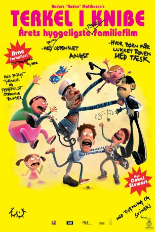

IMDB-Wertung: 7.1 / 10
IMDB-Wertung: 7.1 / 10  Metascore:
Metascore: 
Der erste dänische 3D-Animationsfilm von 2004 erzählt die Geschichte des Schülers Terkel, der in seinem Umfeld nicht gerade beliebt ist. Einzige Hoffnungen sind sein Freund Jason und ein neuer Lehrer...
 IMDB-Wertung: 7.1 / 10 Metascore:
Der erste dänische 3D-Animationsfilm von 2004 erzählt die Geschichte des Schülers Terkel, der in seinem Umfeld nicht gerade beliebt ist. Einzige Hoffnungen sind sein Freund Jason und ein neuer Lehrer...
Jahr: 2004
Dauer: 77 Minuten
FSK: 12
Land: Dänemark Studio: MovienetTonspuren:
Untertitel:
Auflösung: SD (576x320) Größe: 696 MB
Genre: Thriller, Komödie, Animation/Trick, Mystery, Musical
Regisseur: Kresten Vestbjerg Andersen, Thorbjørn Christoffersen, Stefan Fjeldmark
Drehbuch: Ocean Group
Soundtrack:
Darsteller:
 Bill Bailey als The Narrator
Bill Bailey als The Narrator Ben Bishop als Jason / Saki / Stan
Ben Bishop als Jason / Saki / Stan Olivia Colman als Terkel's Mum
Olivia Colman als Terkel's Mum Toby Stephens als Justin
Toby Stephens als JustinDatei: X:\Kinder Filme (N-Z)\Terkel in Trouble (2004, FSK12, 576x320).avi seit 20.02.2017
Festplatte: Kinder-Filme+Trick
 Es gibt insgesamt 87 Filme in der Gruppe 'Kinder Filme (N-Z)'
Es gibt insgesamt 87 Filme in der Gruppe 'Kinder Filme (N-Z)'